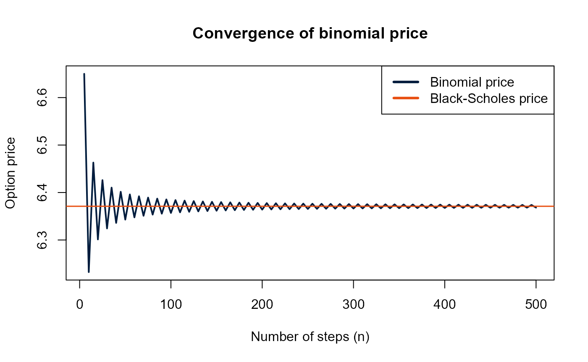
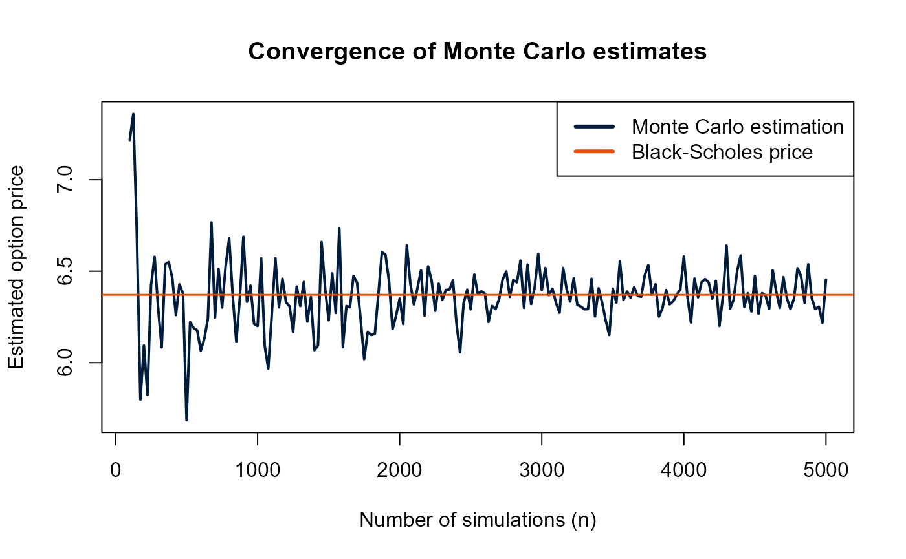

How to use optionsLibrary
Tom Smit
2025-11-28
Source:vignettes/option_pricing_tutorial.Rmd
option_pricing_tutorial.RmdIntroduction
This vignette explains how to use the optionsLibrary
package to price European options using Black-Scholes, binomial pricing,
and Monte Carlo simulation and includes a simple application.
The main syntax is defined as follows:
Spot price = S
Strike price = K
Risk-free rate = r
Dividend yield = q
Volatility = sigma
Time to maturity = T
Now, load optionsLibrary.
Black-Scholes pricing
Computing a European call:
S <- 100
K <- 100
r <- 0.03
q <- 0
sigma <- 0.2
T <- 0.5
call_price <- bs_price(S, K, r, q, sigma, T, 'call')
call_price## [1] 6.371028Same for a European put:
put_price <- bs_price(S, K, r, q, sigma, T, 'put')
put_price## [1] 4.882222Option Greeks
Greeks are easily computed in a similar fashion:
call_greeks <- bs_greeks(S, K, r, q, sigma, T, 'call')
call_greeks## $Delta
## [1] 0.5701581
##
## $Gamma
## [1] 0.02777213
##
## $Theta
## [1] -7.07377
##
## $Vega
## [1] 27.77213
##
## $Rho
## [1] 25.32239
put_greeks <- bs_greeks(S, K, r, q, sigma, T, 'put')
put_greeks## $Delta
## [1] -0.4298419
##
## $Gamma
## [1] 0.02777213
##
## $Theta
## [1] -4.118434
##
## $Vega
## [1] 27.77213
##
## $Rho
## [1] -23.93321
Output is in list form, allowing to isolate a specific greek:
call_greeks$Delta## [1] 0.5701581Binomial tree pricing
n <- 100
call_binomial <- binomial_price(S, K, r, q, sigma, T, n, 'call')
call_binomial## [1] 6.35698
put_binomial <- binomial_price(S, K, r, q, sigma, T, n, 'put')
put_binomial## [1] 4.868174Monte Carlo option pricing
The option’s price can also be simulated using Monte Carlo:
call_montecarlo <- mc_price(S, K, r, q, sigma, T, 1000, type = 'call', antithetic = TRUE, control_variate = TRUE)
call_montecarlo## $price
## [1] 6.587456
##
## $se
## [1] 0.1344295
##
## $method
## [1] "MC antithetic + control"Applied: convergence to Black-Scholes
A nice application using optionsLibrary is to plot the
convergence of the binomial price to the Black-Scholes price:
n_steps <- seq(5, 500, by = 5)
binomial_prices <- numeric(length(n_steps))
blackscholes_price <- bs_price(S, K, r, q, sigma, T, 'call')
for (i in seq_along(n_steps)) {
n <- n_steps[i]
binomial_prices[i] <- binomial_price(S, K, r, q, sigma, T, n, 'call')
}
plot(n_steps, binomial_prices, type = 'l', col = '#001c3d', lwd = 2, main = 'Convergence of binomial price', xlab = 'Number of steps (n)', ylab = 'Option price')
abline(h = blackscholes_price, col = '#e84e10', lwd = 1.5)
legend('topright', legend = c('Binomial price', 'Black-Scholes price'), col = c('#001c3d', '#e84e10'), lty = c(1, 1), lwd = c(3, 3))
Similarly, the convergence of Monte Carlo estimates can also be plotted:
n_steps2 <- seq(100, 5000, by = 25)
mc_estimates <- numeric(length(n_steps2))
set.seed(12345)
for (i in seq_along(n_steps2)) {
mc <- mc_price(S, K, r, q, sigma, T, n = n_steps2[i], antithetic = TRUE, control_variate = TRUE)
mc_estimates[i] <- mc$price
}
plot(n_steps2, mc_estimates, type = 'l', col = '#001c3d', lwd = 2, main = 'Convergence of Monte Carlo estimates', xlab = 'Number of simulations (n)', ylab = 'Estimated option price')
abline(h = blackscholes_price, col = '#e84e10', lwd = 1.5)
legend('topright', legend = c('Monte Carlo estimation', 'Black-Scholes price'), col = c('#001c3d', '#e84e10'), lty = c(1, 1), lwd = c(3, 3))